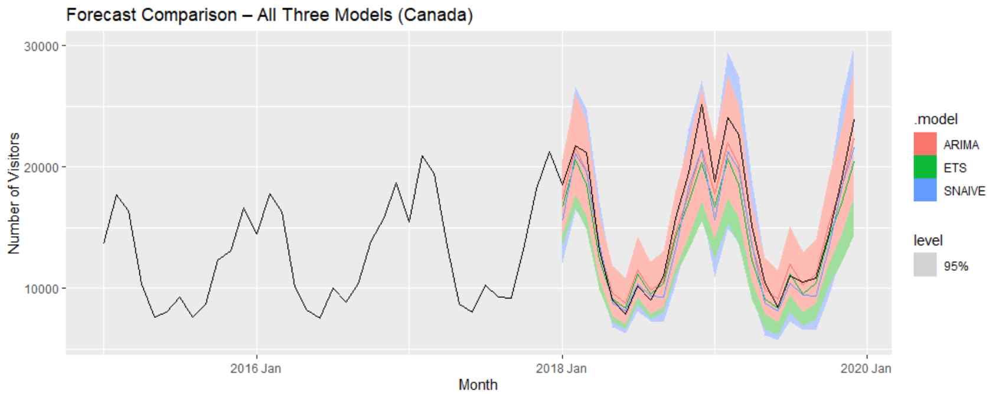

Posted [Month Day, Year]

For this assessment I forecasted monthly Canadian visitor arrivals to Australia, using a dataset spanning 1991 to 2019. The series shows a clear long-run upward trend combined with strong seasonality, peaking every year during the Australian summer (January to March) as Canadians travel to escape their winter, with a smaller secondary peak in July. The goal was to build and compare several forecasting models, then determine which one produced the most reliable forecasts.
I started by visually inspecting the raw series, which showed the seasonal amplitude increasing over time alongside the trend, meaning the variance wasn't constant. To fix this, I applied a log transformation, which stabilised the seasonal variance and is easier to interpret than a Box-Cox transformation, since log-transformed values roughly translate to percentage changes.
With the transformed series, I checked ACF plots to work out what differencing was needed to make the data stationary. First differencing removed the trend but left strong seasonal autocorrelation behind, so I applied a seasonal difference on top, which brought the series close to stationary.
From there I built three models and compared them:
Each model's residuals were checked for white noise using ACF plots, residual histograms and the Ljung-Box test, since a model that leaves patterns in its residuals is missing structure it should be capturing. I then split the data into a training set (up to 2017) and a test set (2018–2019), generated forecasts from all three models over the test period, and compared their accuracy using MAE and MAPE.
The seasonal naive benchmark left significant autocorrelation unexplained in its residuals, confirming a more sophisticated model was needed. Between ARIMA and ETS, ARIMA came out ahead on every measure: its residuals passed the Ljung-Box test (p-value of 0.664, consistent with white noise), while ETS's residuals failed it (p-value of 0.006). On the test set, ARIMA also produced the lowest forecast error, with a MAE of 1,110 and a MAPE of 7.03%, while ETS performed worse than even the simple seasonal naive benchmark.
This project reinforced that a model looking reasonable on a plot isn't enough on its own, the real test is whether its residuals actually behave like white noise and whether it holds up on data it hasn't seen. It was a good reminder that a more complex model, like ETS in this case, doesn't automatically outperform a simpler one, and that comparing models properly means checking diagnostics and out-of-sample accuracy rather than picking based on which fit looks best on paper.